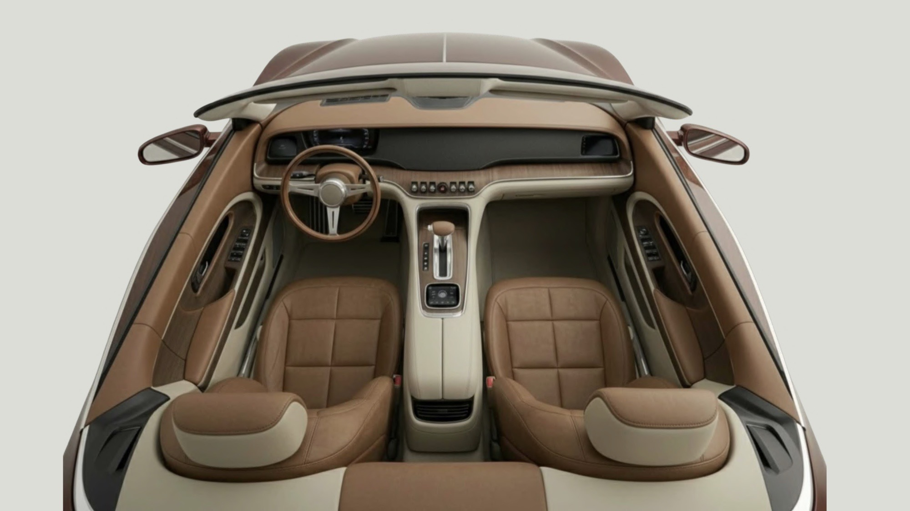

A car concept for women in the prime of their careers. Made for the city: it drives itself through traffic so the cabin can become an office, a lounge or a place to rest.Drive into your future.
01
Women around 30, at the height of their careers, with high disposable income and a busy schedule in a big city.
They want convenience, luxury and self-expression, and they are tired of bumpy roads, parking and living on the freeway.
02
Noise cancellation for a quiet cabin, self-driving for parking, lane changes and traffic, and suspension that adjusts for bumpy roads.
AI remembers your favourite settings, from temperature to seat position.
03
KHAI conveys sophistication, strength and innovation. The material breakdown pairs the exterior body with warm leather and soft textiles inside.
04
Seats rotate and lean back, and retractable desks fold out for the front and back seats.
Day mode simplifies traffic routes and saves energy with solar charging. Night mode brings automatic headlights and optional LED ambience.
A modular desk clips to the underside of the steering wheel and detaches when it isn’t needed.
05
A warm, retro-modern cabin: caramel leather, cream panels and a classic wheel with a smart screen beside it.
Recognition